Free on the App Store · iPhone & iPad · Ages 2–4
Clay fruits and veggies, and the words that name them.
ClayPals: Fruits & Veggies is a claymation puzzle toy for two-, three- and four-year-olds. Twenty-eight clay fruits and vegetables, each in the place it grows. Finish one and it says its own name out loud, then spells it.
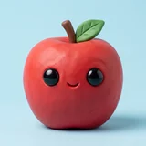
Download freeSeven foods free forever. No ads, no subscription, no accounts, and nothing about your child is collected.
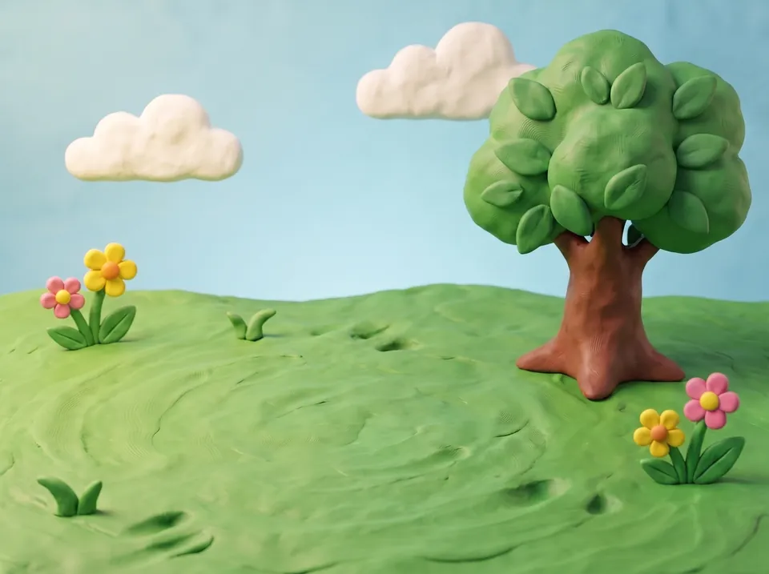
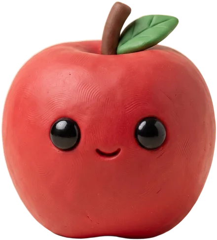
How a food goes together
Two gentle puzzles, then the word.
The same three beats every time, in the same order, for every food. Nothing is timed, and a puzzle waits as long as they need.
-
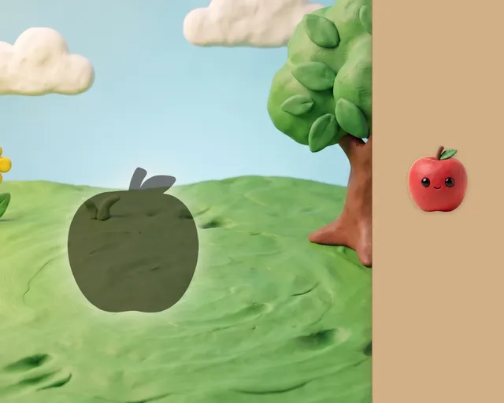
Slide it home
The apple into the orchard, the carrot into the garden bed, the grapes onto the vine. One big target, generous snapping, no rotation to fight with — and no wrong answers to get.
-
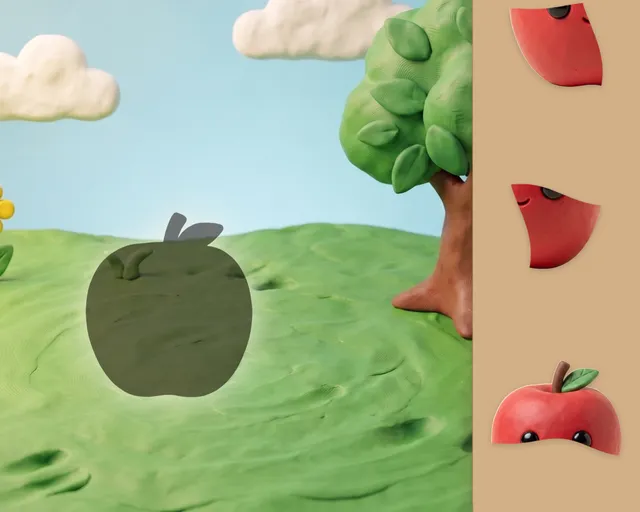
Build it back
The food splits into three or four big clay pieces, sized for a two-year-old's grip. A wiggle, a satisfying pop, and it's whole again. A piece in the wrong place just springs back.
-
Then it says the word
The finished food says its own name out loud, then the letters are named one at a time on a little word card. A few seconds of print — never a quiz, and a grown-up can switch it off in the Parents' Corner.
What's not in it
It's the quiet one.
No ads, no scores, no streaks, nothing collected — and after one purchase it never asks you for anything again.
- No ads
- No scores
- No streaks
- No timers
- No notifications
- No accounts
- No microphone
- No data collected
- No ungated links
- No way to lose
It respects your room
Flip the hardware mute switch and the app goes silent. Start a podcast and it plays politely underneath instead of taking over your audio. The background music is quiet by default and switches off in one tap.
The same four seconds, every time
Every celebration is one four-second clip. The same gentle moment for that food, however many times it is finished.
Nothing leaves the device
No analytics, no tracking, no accounts, no microphone and no speech recognition — the app never listens. It plays fully in airplane mode. Apple privacy label: Data Not Collected.
Big pieces for little fingers. No time limits, no wrong answers, nothing to fall behind on — a puzzle waits as long as they need.
The roster
Twenty-eight foods, twenty-eight little worlds.
Orchard, garden bed, vineyard, cornfield, berry bush and more. Apple, banana, carrot, tomato, orange, corn and grape are free forever.
-
FreeApple
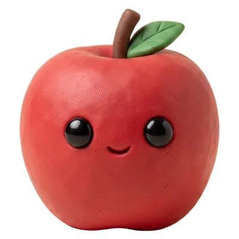
-
FreeBanana
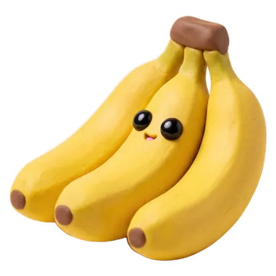
-
FreeCarrot
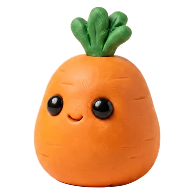
-
FreeTomato
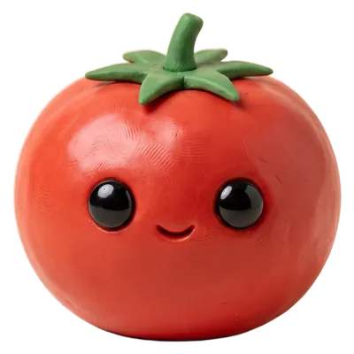
-
FreeOrange
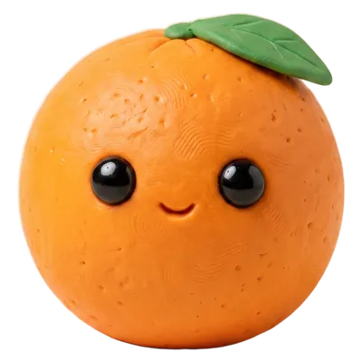
-
FreeCorn
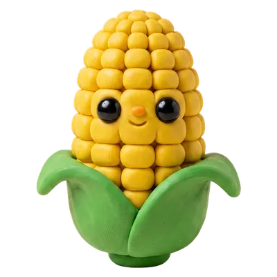
-
FreeGrape
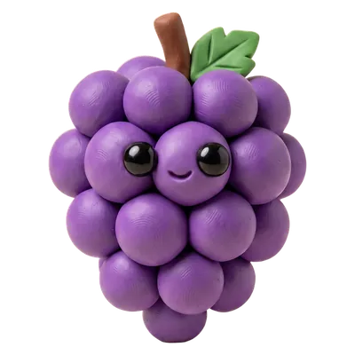
-
Pear
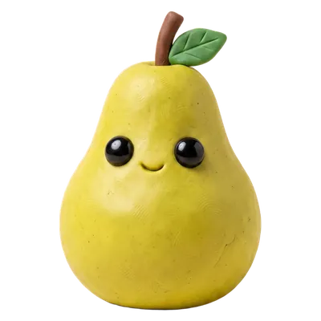
-
Peach
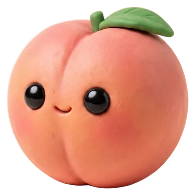
-
Lemon
-
Cherry
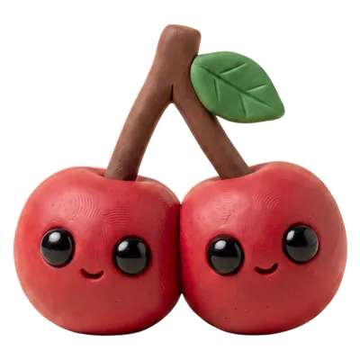
-
Mango
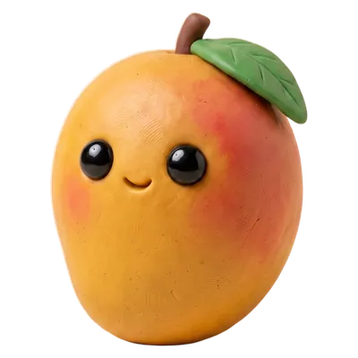
-
Kiwi
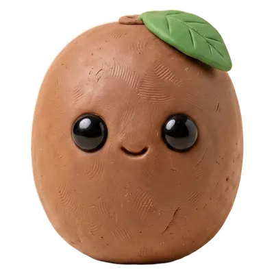
-
Melon
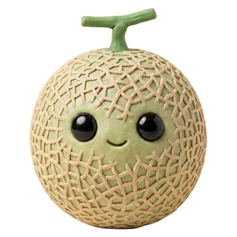
-
Plum
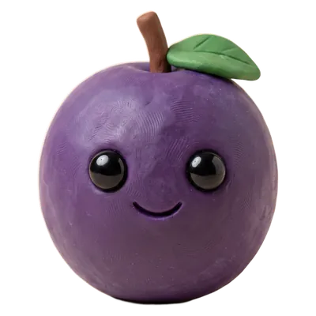
-
Potato
-
Peas
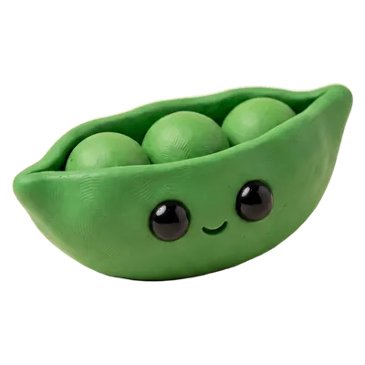
-
Onion
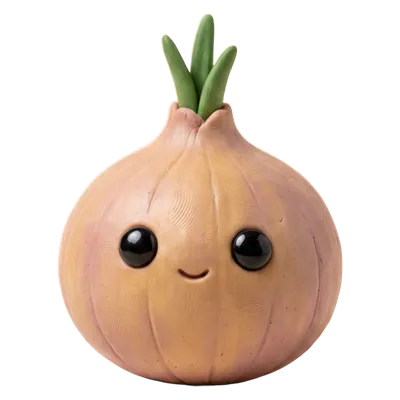
-
Pepper
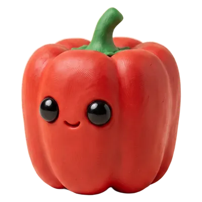
-
Celery
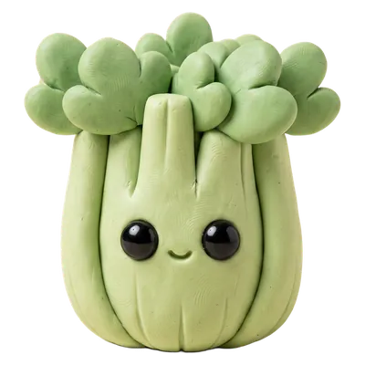
-
Strawberry
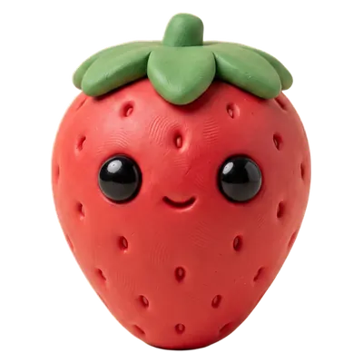
-
Watermelon
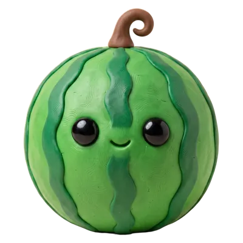
-
Blueberry
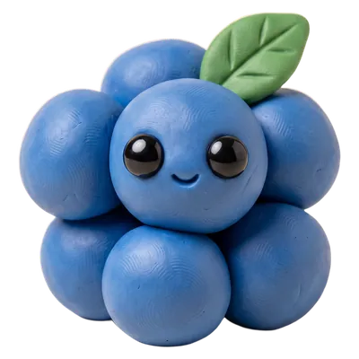
-
Pineapple
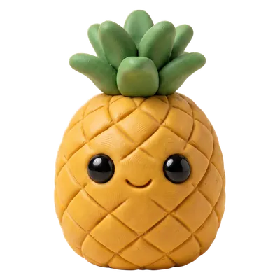
-
Broccoli
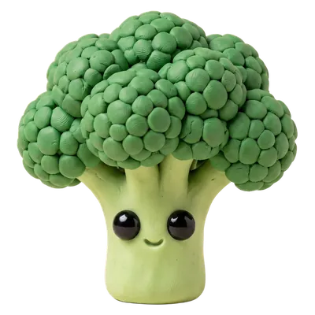
-
Cucumber
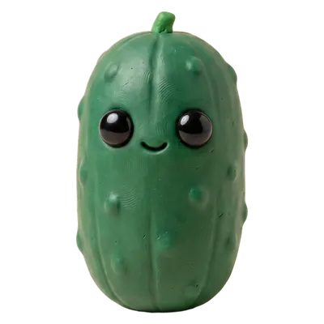
-
Pumpkin
-
Mushroom
The whole business model
What's free, and what isn't.
-
Free
Apple, banana, carrot, tomato, orange, corn and grape
Yours forever. Two full puzzles each, the word moment, every sound — no time limit and no ads.
-
$4.99 once
The other twenty-one foods
One optional in-app purchase. Not a subscription, not coins, not a bundle — there is nothing else to buy, ever.
The purchase sits behind a parental gate a grown-up has to hold for three seconds, and Family Sharing and Ask to Buy work as you would expect. ClayPals: Fruits & Veggies is free to download, and the seven free foods stay free whether you buy or not.
Twenty-eight foods are waiting.
Download free on the App Store
Requires iOS 17 or later. iPhone and iPad. Works completely offline — airplanes, waiting rooms, grandma's house.